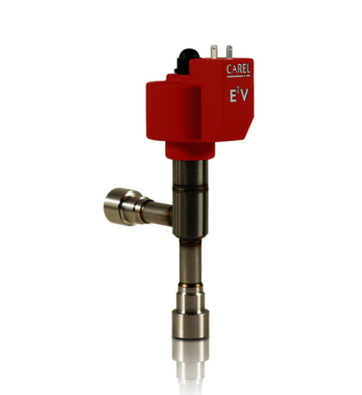
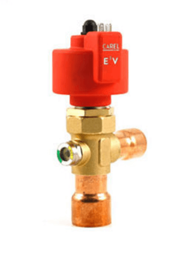
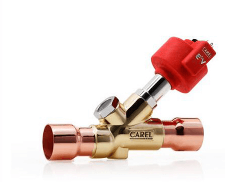
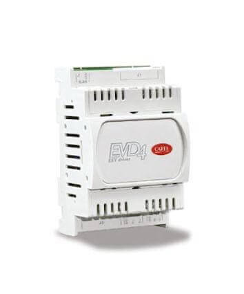

La válvula de expansión electrónica es el componente que marca la diferencia entre un sistema de refrigeración que consume lo necesario y uno que desperdicia energía. Mientras una válvula termostática regula por presión de bulbo con una tolerancia fija, una válvula electrónica mide la superheat en tiempo real y ajusta el paso de refrigerante milímetro a milímetro, estabilizando la temperatura de cámara y reduciendo el consumo eléctrico entre un 10 % y un 20 %.
Somos distribuidor autorizado Carel en Ecuador. Manejamos la línea completa de válvulas de expansión electrónica E2V, E3V, E4V y E5V, junto con sus controladores EVD y pantallas EVDIS. No vendemos válvulas sueltas: seleccionamos la válvula, el controlador y los sensores como un sistema integrado, porque sin el controlador correcto la válvula no cumple su función.
Serie E2V — capacidades pequeñas y medias
Los modelos E2V18, E2V24 y E2V35 cubren el rango de capacidades más común en refrigeración comercial e industrial ligera en Ecuador: cámaras de conservación de productos frescos, equipos de supermercados, vitrinas comerciales y unidades condensadoras de mediana capacidad.
- Cuerpo compacto de acero inoxidable, conexiones roscadas SAE de 1/2" a 3/8".
- Motor paso a paso con 500 pasos de resolución para ajuste fino.
- Compatible con R404A, R507, R134a, R22, R448A y R449A. Capacidad: 2 a 35 kW.
- Ventaja clave: respuesta rápida a cambios de carga térmica, ideal donde la puerta se abre con frecuencia.

Series E3V y E4V — capacidades intermedias
Cuando la carga supera los 35 kW o el evaporador tiene múltiples circuitos, la serie E2V alcanza su límite de caudal. Los modelos E3V45, E3V65 y E4V95 cubren ese escalón intermedio: cámaras de congelación industrial, túneles de enfriamiento, chillers de capacidad media y evaporadores de gran superficie.
- Conexiones soldables ODF de 5/8" a 7/8", cuerpo de acero inoxidable AISI 316.
- Motor paso a paso de mayor torque para vencer presiones diferenciales elevadas.
- Diseño de asiento que minimiza el riesgo de obstrucción por impurezas. Capacidad: 35 a 95 kW.

Serie E5V — alta capacidad industrial
Para aplicaciones de gran tonelaje donde cada décima de grado de superheat cuenta, los modelos E5V-A2 y E5V-A5 ofrecen el caudal y la precisión que exigen plantas de proceso continuo: chillers industriales, plantas cárnicas y centros de distribución de congelados.
- Conexiones ODF de 35 mm, motor paso a paso de alta resolución.
- Diseño de doble asiento para regulación estable desde aperturas mínimas hasta caudal máximo.
- Compatible con refrigerantes naturales como CO2 (R744) en configuraciones específicas. Capacidad: 80 a 200 kW y superior en configuraciones paralelas.
- Ventaja clave: operación estable a carga completa y parcial, mejorando el IPLV del sistema.

Controladores EVD y pantallas EVDIS
Una válvula electrónica sin el controlador adecuado es como un motor sin centralita: el hardware existe pero no sabe qué hacer. Seleccionamos el controlador EVD y la pantalla EVDIS como parte integral del sistema, configurados según el tipo de evaporador, el refrigerante, el rango de temperatura y la estrategia de desescarche.
- Controlador EVD: gestiona la apertura de la válvula en función de la superheat calculada con sensores de temperatura y presión, con algoritmos de adaptación automática que eliminan la sintonización manual.
- Pantalla EVDIS: interface local para visualización de parámetros, ajuste de setpoints y diagnóstico de alarmas, con comunicación Modbus para monitoreo centralizado.

Aplicaciones en Ecuador
- Cámaras de conservación: control estable en ±0.5°C, menos pérdida por deshidratación
- Cámaras de congelación: respuesta rápida a cargas variables en ciclos de desescarche
- Chillers industriales: optimización del COP con control de superheat preciso
- Supermercados: múltiples evaporadores con carga y válvula independientes
- Bombas de calor: inversión del ciclo sin cambio de componentes
¿Quiere reducir el consumo eléctrico de su cámara o reemplazar válvulas termostáticas por electrónicas? Envíenos la capacidad de su evaporador, el refrigerante y la aplicación. Le proponemos la válvula y el controlador con memoria de selección técnica.
Preguntas frecuentes
¿Cuánto ahorra una válvula de expansión electrónica frente a una termostática?
Entre un 10% y un 20% de consumo eléctrico, porque mide la superheat en tiempo real y ajusta el paso de refrigerante con precisión, en vez de regular por presión de bulbo con una tolerancia fija.
¿Se puede instalar una válvula Carel sin cambiar el controlador?
No. La válvula electrónica necesita un controlador EVD que calcule la superheat y gobierne el motor paso a paso. Seleccionamos válvula, controlador y sensores como un sistema integrado, no piezas sueltas.
¿Qué serie de válvula Carel necesito según la capacidad de mi evaporador?
La E2V cubre de 2 a 35 kW, ideal para cámaras de conservación y comercio. La E3V/E4V cubre de 35 a 95 kW para congelación industrial y chillers medianos. La E5V cubre de 80 a 200 kW y más, para plantas de proceso continuo.
¿Las válvulas Carel sirven para bombas de calor?
Sí, su rango bidireccional permite invertir el ciclo sin cambiar de componentes, lo que las hace aptas tanto para refrigeración como para calefacción en el mismo sistema.